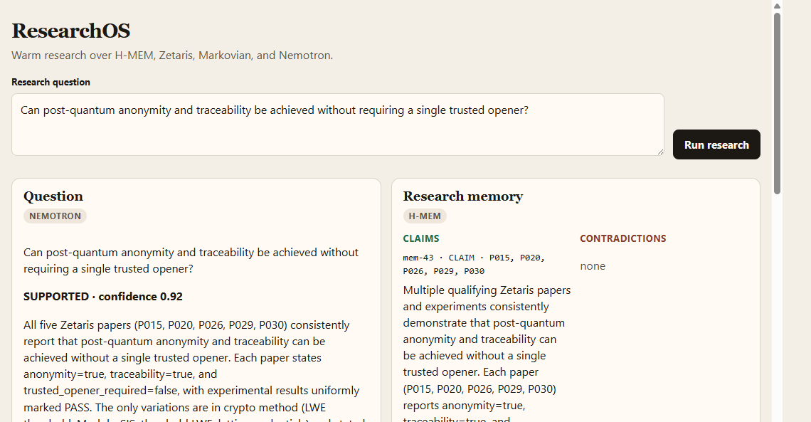
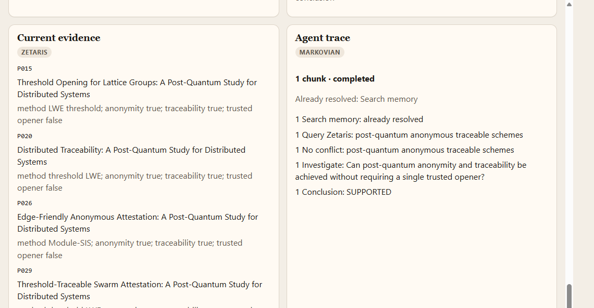

ResearchOS
A question needs memory and evidence.
The conclusion has to say whether that evidence supports the claim.
1 / 9
Problem and users
Notes and papers never meet.
- Who A researcher checking one claim against a paper corpus and their own earlier conclusions.
- The work The question is plain language. No paper id, and no model name. The demo is post-quantum cryptography.
- What breaks A new question starts from zero, or repeats a conclusion the papers no longer support.
- What a model does It can name papers that were never retrieved. Nothing says whether the evidence supports the claim.
2 / 9
Solution
One question. Four panes. One assessment.
- SUPPORTED The relevant evidence agrees, and none of it denies the question.
- CONTRADICTED The relevant evidence denies the question, and none of it agrees.
- MIXED Some evidence agrees and some denies it.
- INSUFFICIENT No supplied evidence is about the question.
Every cited paper id has to be in the memories or the Zetaris rows that were sent.
3 / 9
Agent workflow
Recall, then evidence, then a stop.
Question
H-MEM recall
Markovian, at most 3
Zetaris
Nemotron
Contradiction check
Store the finding
- On a warm run the first chunk already holds the recalled memory, so Search memory is not repeated.
- Each chunk asks Zetaris once. Nemotron assesses that chunk plus the evidence gathered so far.
- The loop stops when the assessment is not INSUFFICIENT and nothing is still open, or at chunk 3.
4 / 9
Technical stack
Vendored engines, one local model call.
- Page Node and tsx. Run research calls POST /api/research.
- H-MEM Vendored Meterless engine. Prior claims live in .memory.
- Markovian Vendored. Chunk size 2000, at most 3 chunks, 128 carryover tokens.
- Zetaris Current papers, notes, and experiments.
- Nightshift Local runtime. Model nvidia/nemotron-3.5-lightning-30b-a3b.
- Offline reasoner The same four assessments, with Nightshift stopped.
5 / 9
Zetaris and Meterless
The corpus stays in Zetaris. The loop is Meterless.
- Zetaris Each chunk queries it once: schemes, one paper, or conflicting evidence, and only for work not already completed.
- H-MEM Recalls prior findings into the first chunk, then stores the new finding once.
- Markovian Carries completed work, what is still open, decisions, and context from chunk to chunk.
- Nightshift The only model call. The NVIDIA key stays there and never enters this repo.
The reference engines are vendored. They were not rewritten.
6 / 9
What is unique
The loop stops, and it may only cite what it was given.
- Warm is shorter H-MEM text enters the first chunk only. A cold run takes 3 chunks. A warm run takes 2.
- Later chunks stay open They do not see that reinjection. They search memory for what is still unresolved.
- No invented papers Supporting and conflicting ids have to be in the memories or the Zetaris rows that were sent.
- A contradiction has a consequence CONTRADICTS always recommends revising the existing conclusion.
7 / 9
Product
One warm run, on the page.


Trusted-opener question. Assessment SUPPORTED, from P015, P020, P026, P029, and P030.
8 / 9
Future
What the next runs should show.
- A visible contradiction The evaluator already marks CONTRADICTS in tests. The page should show that case, not only agreement.
- A researcher edit Accept or revise a stored finding before the next warm run uses it.
- Open questions that persist Carry one unanswered question into a later run, still inside the 3-chunk cap.
- An export The assessment, with the paper ids it was allowed to cite.
9 / 9